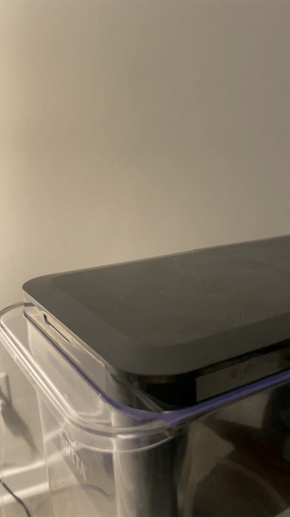
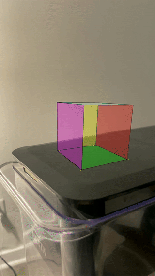
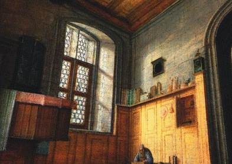
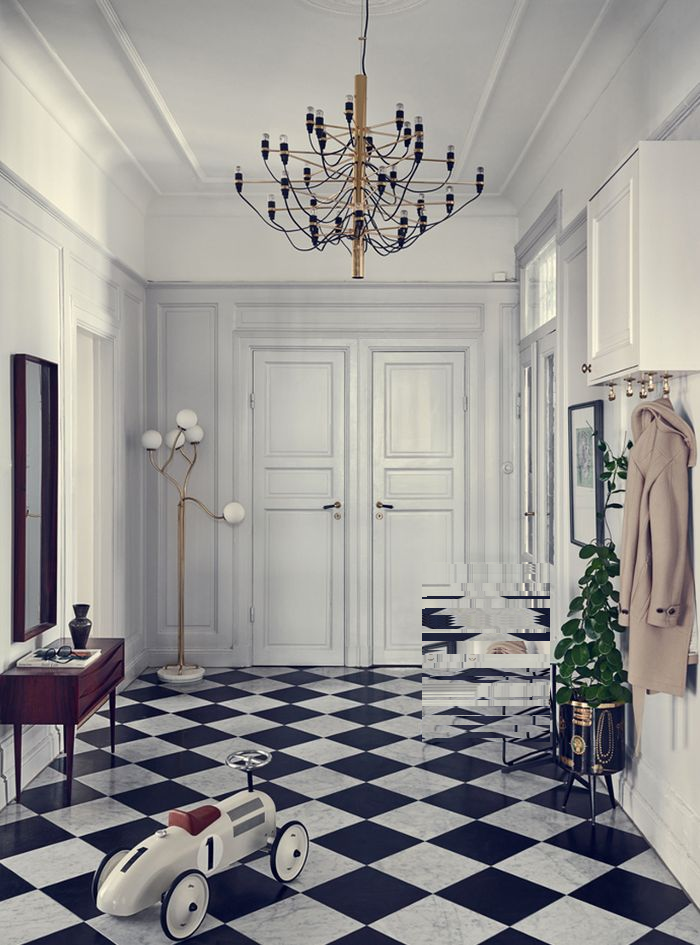
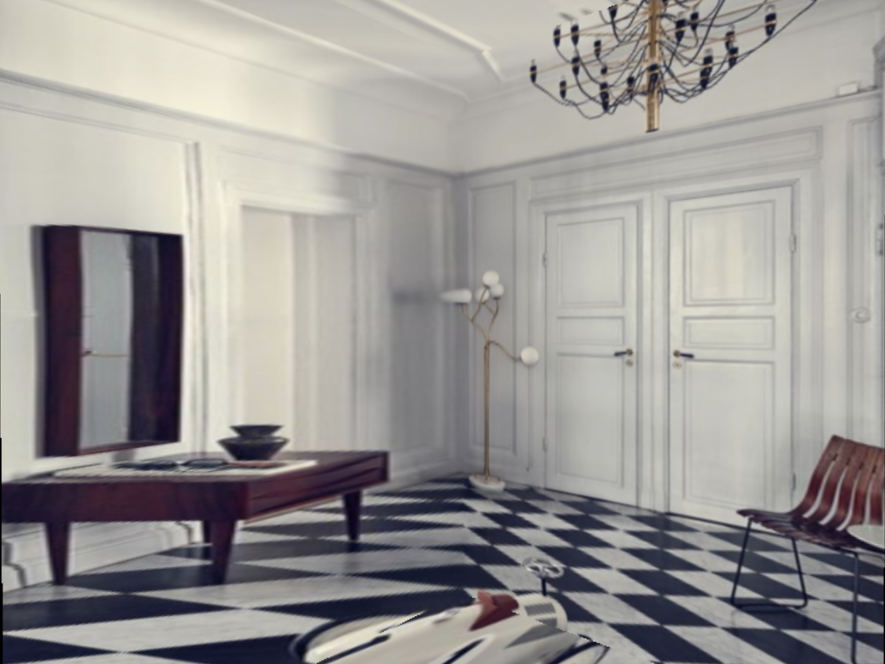
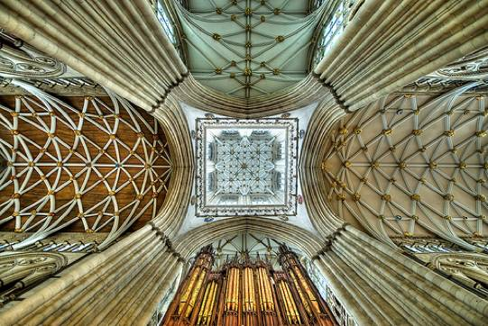
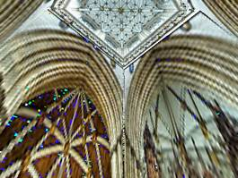

Augmented Reality
Overview
In this project, I implemented an augmented reality (AR) system that creates a "poor man's" version of AR using computer vision techniques. The program takes a video input where the user is prompted to set four corner points on a flat surface, and then the program tracks these points throughout the video using optical flow. Using these tracked 2D points and their corresponding 3D coordinates, the program calculates the camera's position and orientation for each frame using solvePnP. This allows the program to project a 3D cube onto the video, making it appear as if the object is anchored to the real-world surface. The system adjusts the cube's perspective based on camera movement, creating an illusion that the object exists in the real world.
|  |  |
Tour Into The Picture
Overview
In this project, I implemented "Tour Into the Picture" (TIP), a technique to create different views from a single 2D image. The program prompts the user to specify a vanishing point and an inner rectangle on an image using a spidery mesh interface. Then, the program generates a simple 3D scene by creating five planes (floor, ceiling, back wall, and side walls) and mapping appropriate textures from the original image onto these planes. Using camera controls, the program randomly generates different viewpoints from different camera angles as if it were a real 3D environment. The technique doesn't create a fully accurate 3D model, but instead creates a convincing visual effect that gives the impression of moving through the 2D image in three dimensions.

|
 |
|  |  |
|  |  |